Four Ski Days
Enough time for beginners to build confidence and for intermediate skiers to enjoy the mountain.
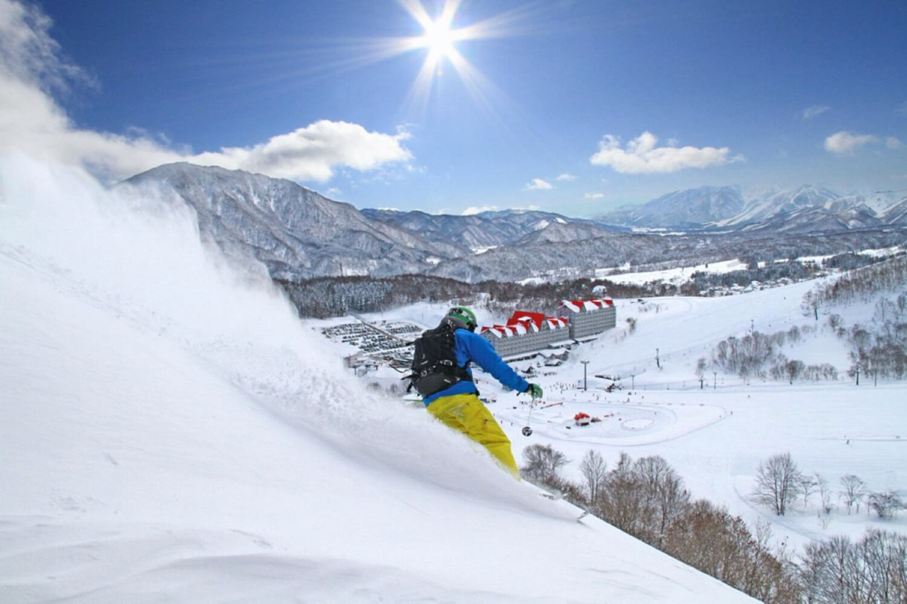
Winter · Ski · Onsen
A 10-day winter Japan trip with powder snow, beginner-friendly ski support, Nagano’s famous snow monkeys, and restorative onsen stays.
10 days · December-March · Winter, ski, and onsen
Dates, pace, activities, accommodation level, learning goals, and supervision can be adjusted for schools, families, clubs, and private groups.
Overview
This itinerary combines four full ski days, the unforgettable sight of Jigokudani’s snow monkeys, onsen culture, and enough Tokyo time for shopping or light sightseeing.
It is especially well suited for families and teen groups who want Japan snow with support for lessons, equipment, transportation, and safe group pacing.
Highlights
Enough time for beginners to build confidence and for intermediate skiers to enjoy the mountain.
Jigokudani’s snow monkeys create one of the trip’s most memorable visual moments for students, families, and short-form content.
Hot springs make the itinerary feel restorative—not just athletic—and give non-skiing family members a meaningful way to enjoy the route.
Tokyo arrival and departure make the trip easier to organize for international families.
Beginner lessons, level grouping, and equipment checks can be built into the trip plan.
Snow play, snowshoeing, sledding, shopping, or onsen time can support groups with mixed ability levels.
Day by day
Private transfer, hotel check-in, and a short briefing on winter conditions, equipment, and group safety rules.

Light sightseeing in Asakusa, Shibuya, or Meiji Jingu, followed by equipment shopping or rental preparation in the afternoon.
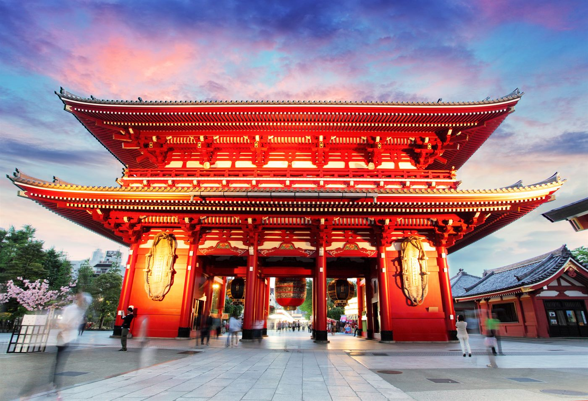
Take the train to Nagano, visit Jigokudani Yaen-Koen, then continue to Hakuba or Nozawa Onsen.
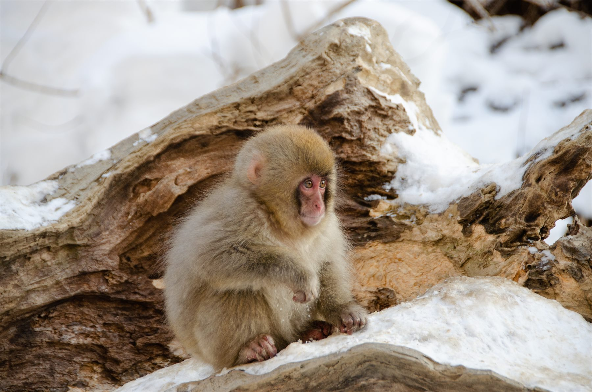
Level assessment, beginner ski school, intermediate orientation, and evening onsen recovery.
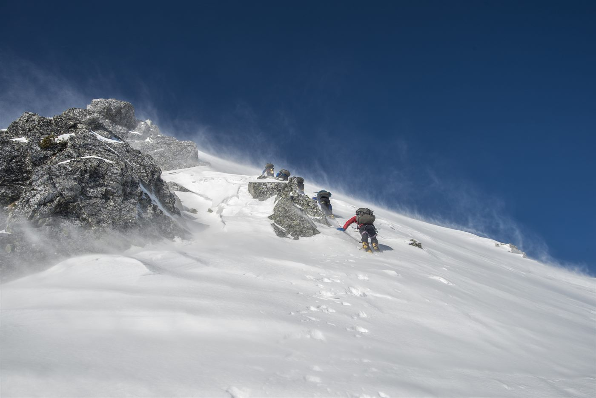
Continue lessons or free skiing by ability group, with family photos, a mountain lunch, and a local hot pot dinner.
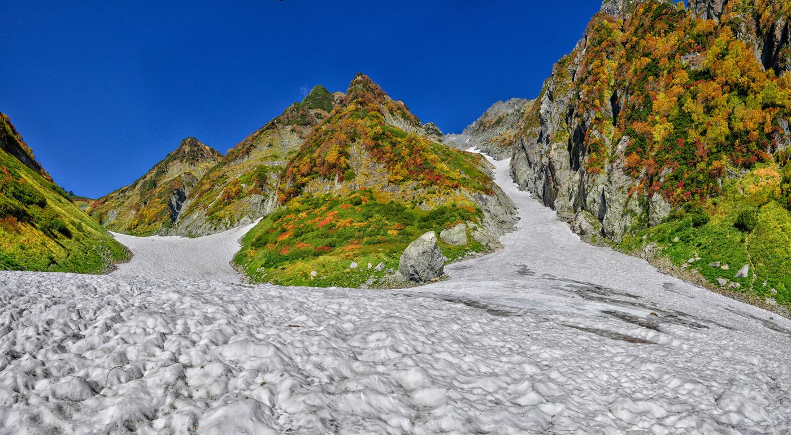
Turning and braking practice for beginners, longer runs for intermediate skiers, and alternate snow activities for non-skiers.
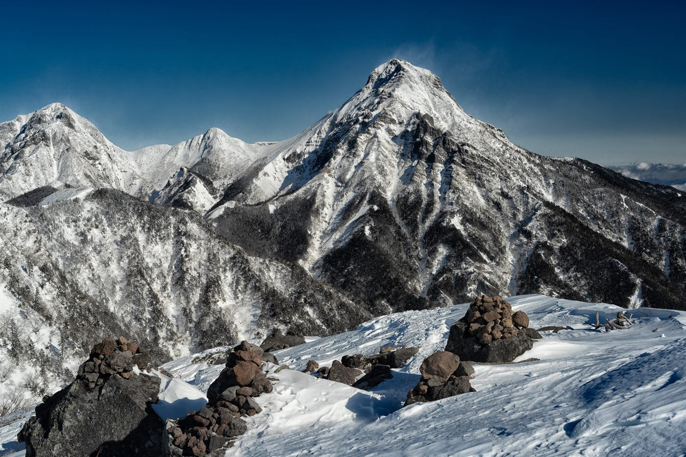
Final ski session, optional certificate moment, group closing dinner, and onsen time.
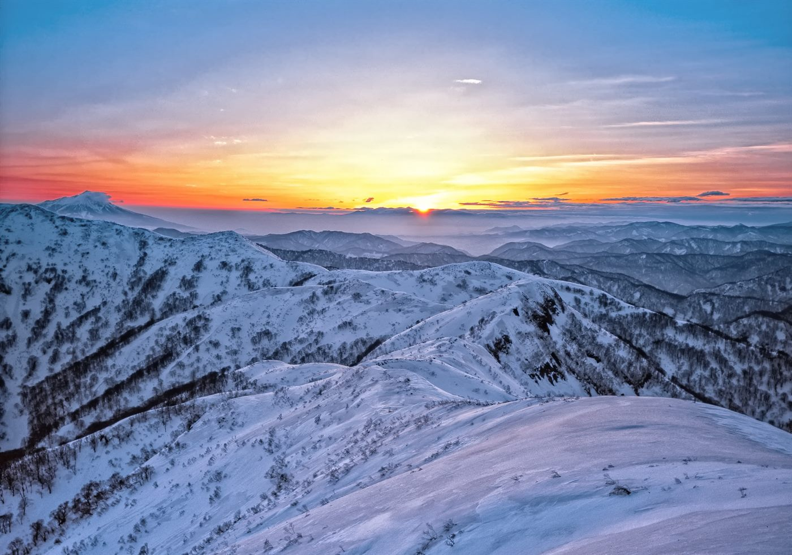
Experience another accessible ski area, then return to Tokyo or stay in a Yuzawa onsen hotel depending on flight timing.
Choose shopping, Akihabara, Ginza, Odaiba, Shibuya, or a relaxed family-friendly Tokyo route.
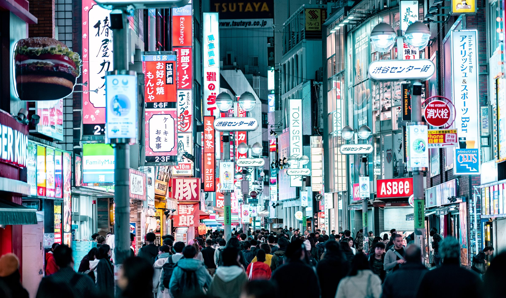
Airport transfer and departure.

Booking and travel terms
These are the general terms. Final pricing, payment dates, and change or cancellation conditions are confirmed in the tailored proposal after the itinerary and services are agreed.
Share your dates, group profile, and priorities. We confirm feasibility, issue a tailored proposal, and begin reservations after written approval and the planning deposit.
A planning deposit confirms the booking. The remaining balance is divided into scheduled payments shown in the proposal, with final payment due before departure.
Cancellation terms follow the tailored proposal and supplier contracts. Fees may increase closer to departure and after tickets, activities, or rooms become non-refundable.
Comprehensive travel insurance is strongly recommended from the time of deposit, including medical care, cancellation, interruption, baggage, and activity-specific cover.
Trip moments
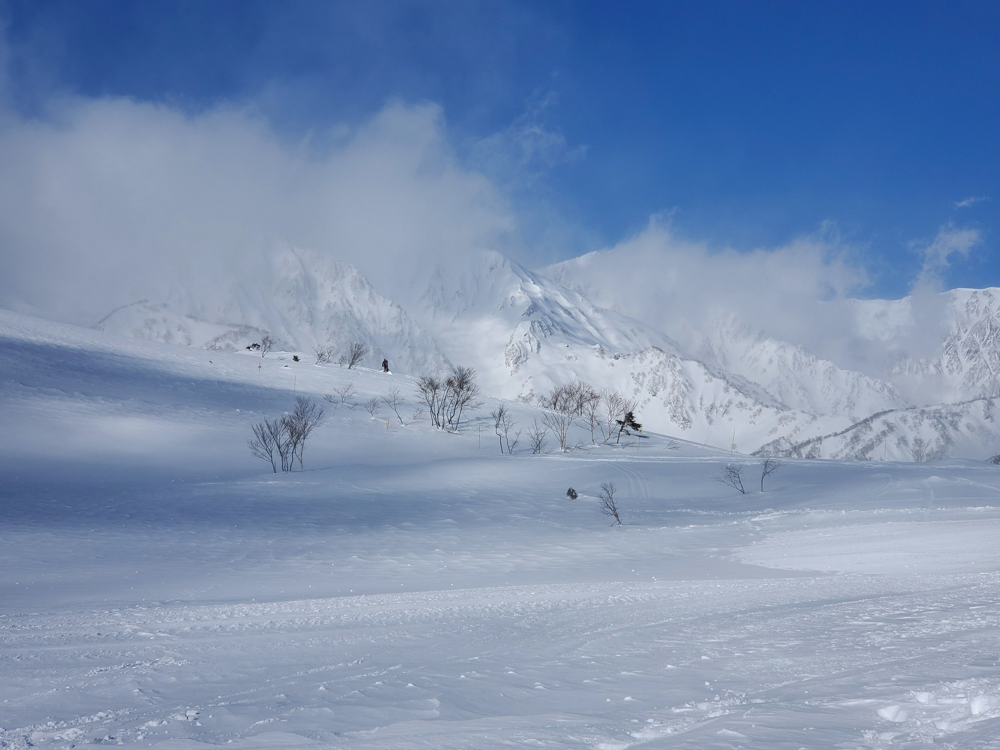
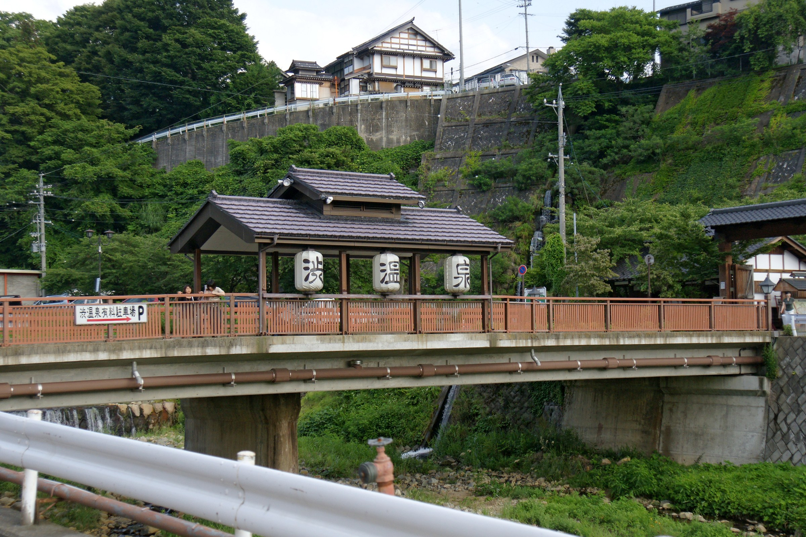
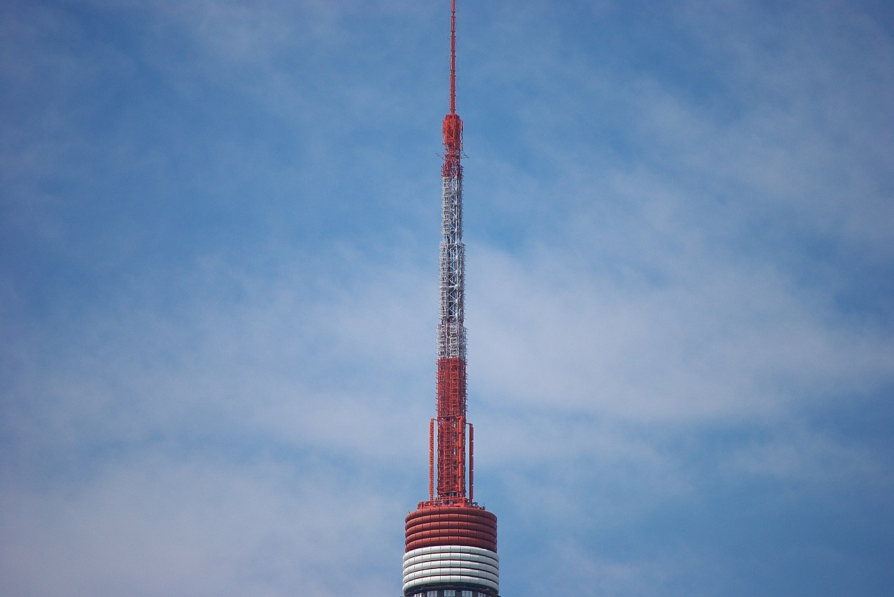
Ideal for school breaks, teen winter camps, and family groups seeking a supported first ski experience in Japan.
Request Info